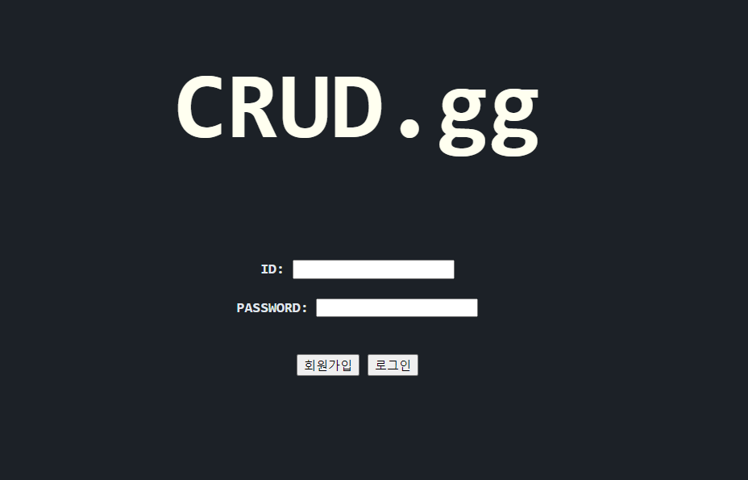

Go로 만드는 웹 (2): 회원가입, 로그인&아웃 기능 구현..!
# 2021-04-12
드디어 어제..!
내가 개인 프로젝트로 진행하던(Crud.gg라고 하겠습니다) crud.gg에 로그인, 로그아웃, 회원가입 기능을 붙였다. 이를 구현하기위해 1. 쿠키와 세션, 2. 비밀번호 암호화, 3. db 분리, 4. 로그인 원리? 등의 키워드로 공부를 하였다. 그 결과 ! 아직 보완하고 정리해야할 부분이 많이 남아있지만 회원가입을 하고 로그인, 로그아웃 하는 데 까지 구현을 성공하였다 ㅠㅠ.
이제 코드 정리도 좀 하고 일정시간이 지나면 세션을 삭제하는 기능을 구현할 예정이고 어떤 api를 호출하여 좀 재미있고 흥미로운 프로젝트를 만들 수 있을까 고민중이다.
머릿속에 있는 생각은 두 가지 있는데 하나는 블랙서바이벌:영원회귀 전적검색이고 다른 하나는 하스스톤 api를 호출하여 유저들에게 유익한 컨텐츠를 제공할 수 있게 하는 것이다.
블랙서바이벌의 경우 얼마전에 api를 제공했다고 들었는데 아직 자세히 찾아보지는 못한 상태이다.
하스스톤도 블랙서바이벌과 같이 내가 굉장히 좋아하는 게임인데 전적 검색기능을 제공하는 사이트가 없어 내가 한번 만들어 볼까 생각을 했었는데 아쉽게도 블리자드 api에서는 게임유저들의 전적에 대한 데이터를 제공해주지 않았다 ㅠㅠ.(제공을 해주지 않았기 때문에 하스스톤 전적검색 사이트도 없었겠지…)
아무튼 컨텐츠의 경우 일단 좀 더 crud.gg를 튼튼하게 만들고 난 후 다시 고민해볼 생각이다.
이제 내가 어떻게 지금까지의 웹을 구현했는지 기록하는 시간을 가져보겠다.
DataBase
우선 데이터 베이스는 두 개의 테이블로 구성을 하였다.
하나는 클라이언트의 상태를 유지를 위한 session테이블, 다른 하나는 모든 회원의 정보를 갖는 user테이블이다. session테이블에는 클라이언트의 쿠키와 대조하여 상태를 유지할 수 있게끔 해주는 session_id필드와 session_id와 user테이블의 연결을 위한 user_id필드가 있고 user_id는 user테이블의 primary key인 id필드에 대한 외래키이다.
한번 로그인을 하고 로그인한 상태를 유지할 때 session_id와 user_id만 있으면 제 기능을 할 수 있기 때문에 불필요한 데이터 호출을 줄이기 위해 테이블을 나누었다. (이 글을 쓰다가 생각났는데 session테이블의 user_id를 primary key로 해주어 중복 로그인을 방지해야겠다..)
그렇게 해서 만들어진 두 테이블이다.
1
2
3
4
5
6
7
# session table
+------------+--------------+------+-----+---------+-------+
| Field | Type | Null | Key | Default | Extra |
+------------+--------------+------+-----+---------+-------+
| session_id | varchar(100) | NO | | NULL | |
| user_id | varchar(100) | NO | MUL | NULL | |
+------------+--------------+------+-----+---------+-------+
1
2
3
4
5
6
7
8
9
# user table
+----------+--------------+------+-----+---------+-------+
| Field | Type | Null | Key | Default | Extra |
+----------+--------------+------+-----+---------+-------+
| id | varchar(30) | NO | PRI | NULL | |
| password | varchar(255) | YES | | NULL | |
| created | datetime | NO | | NULL | |
| name | varchar(30) | NO | | NULL | |
+----------+--------------+------+-----+---------+-------+
user 테이블을 보면 password필드만 길이가 255인 것을 확인할 수 있다 ㅋㅋ. 이는 보안을 위해 데이터베이스에 비밀번호를 암호화 하여 저장해주었기 때문이다. 너무 당연한 사실인데 평소에는 생각을 못했던 부분이었다. 비밀번호를 plain text 그대로 저장해버리면 보안에 있어서 매우 취약하고 악용될 여지도 있을 것이다.
그래서 아마 해싱과 같은 방법으로 비밀번호를 저장하게 되어 db가 유출되어도 비밀번호 원문을 알지 못해 2차 피해를 막을 수 있을것이다. 이미 시중에 나와있는 서비스의 대부분의 경우 비밀번호 찾기 기능을 하면 원래의 비밀번호를 알려주지않고 임시 비밀번호를 알려주는 이유였다 ㅋㅋㅋ. (임시비밀번호 제공 기능도 구현해야겠네..)
회원가입
사실 회원가입의 경우에는 비교적 특별할 게 없었다.
그냥 회원가입 페이지에서 post 요청이 오면 해당 페이지의 form데이터를 받아와 DB에 넣어주는 기능만 하면 되었다. (또 글을 쓰다가 생각 났는데 사용자가 유효하지 않은 입력을 넣어주었을 때 예외처리도 해주어야겠다.)
아직 회원가입을 포함해 모든 코드 정리를 하지 않았지만 코드를 보자.
1
2
3
4
5
6
7
8
9
10
11
12
13
14
15
16
func signUp(w http.ResponseWriter, req *http.Request) {
// 이미 로그인이 되어있다면 index페이지로 redirect.
if alreadyLoggedIn(req) {
http.Redirect(w, req, "/index", http.StatusSeeOther)
return
}
// 이부분은 그냥 페이지를 띄워주는 건데 굳이 if문에 넣지 않아도 될것같다.
if req.Method == http.MethodGet {
tpl.ExecuteTemplate(w, "signup.gohtml", nil)
}
// "submit"버튼을 누르면 실행되는 블럭. db에 user정보를 저장하고 로그인페이지로 redirect.
if req.Method == http.MethodPost {
CreateUser(db, req)
http.Redirect(w, req, "/", http.StatusSeeOther)
}
}
로그인
로그인 기능 부터 할 이야기가 많지만… 최대한 짧게 정리하겠다 ㅋㅋ..
로그인 기능을 구현하기 위해 어떻게 상태를 유지해야 하나.. 찾아보다가 쿠키와 세션에 대해 알게 되었고 공부를 하고나서 바로 적용시켰다.

로그인 페이지로 들어왔을 때 이미 로그인이 된 상태라면 index페이지로 redirect해주었다.
회원가입 버튼을 누르면 회원가입 페이지로, 로그인버튼을 누르면 입력한 id, pw를 검증하여 인덱스 페이지로 이동하게끔 해주었다. 코드는 아래와 같다. 마찬가지로 코드 설명은 주석으로 대체!
1
2
3
4
5
6
7
8
9
10
11
12
13
14
15
16
17
18
19
20
21
22
23
24
25
26
27
28
29
30
31
func login(w http.ResponseWriter, req *http.Request) {
// 이미 로그인이 되었다면 index page로 redirect
if alreadyLoggedIn(req) {
http.Redirect(w, req, "/index", http.StatusSeeOther)
return
}
// login 버튼이 눌렸다면
if req.Method == http.MethodPost {
user, err := ReadUser(db, req) // 입력받은 데이터가 db에 존재하는지 확인
// 없다면 에러 페이지 반환 => 추후에 login page에 알람을 띄워주는 형태로 해주자
if err != nil {
http.Error(w, err.Error(), http.StatusForbidden)
return
}
sID := uuid.New() // session_id로 쓸 uuid 생성
// name이 session이고 Value가 uuid인 쿠키를 생성 => 상태유지를 위함1
c := &http.Cookie{
Name: "session",
Value: sID.String(),
}
http.SetCookie(w, c)
// session table에 uuid와 id를 저장 => 상태유지를 위함2
CreateSession(db, c.Value, user.Id)
// 로그인 완료, 인덱스페이지로 redirect
http.Redirect(w, req, "/index", http.StatusSeeOther)
return
}
tpl.ExecuteTemplate(w, "login.gohtml", nil)
}
이렇게 로그인을 성공하게 되면 일단 위와 같이 내가 로그인 한 회원의 정보를 볼 수 있게끔 해주었다.
로그아웃
로그아웃은 더더더더욱 간단하다.
그냥 session쿠키, session쿠키와 대응하는 session 테이블의 행을 삭제해주면 끝이기 때문.
그렇게 되면 더이상 상태를 유지해주는 뭐가 없기때문에 로그아웃이 된다.
1
2
3
4
5
6
7
8
9
10
11
12
13
14
15
16
17
18
19
20
21
func logout(w http.ResponseWriter, req *http.Request) {
// 로그인이 되어있지 않다면 로그인 페이지로 redirect
if !alreadyLoggedIn(req) {
http.Redirect(w, req, "/", http.StatusSeeOther)
return
}
c, _ := req.Cookie("session")
// delete session
DeleteSession(db, c.Value)
// cookie의 maxage가 음수인 것은 삭제를 의미한다
c = &http.Cookie{
Name: "session",
Value: "",
MaxAge: -1,
}
http.SetCookie(w, c)
// cookie와 session을 삭제하였으니 로그인 페이지로 redirect!
http.Redirect(w, req, "/", http.StatusSeeOther)
}
마치며..
위에서 보여준 코드들은 일단 페이지를 띄워주는 코드들이고 이 외에도 세션에 대한 코드, DB를 다루는 코드 등 (사실 이부분이 더 많긴함) 이 있지만 글에서는 이 정도로만 정리하겠다. 전체 코드 소스는 여기서 확인할 수 있다.
오늘 내가 혼자 만들고있는 crud.gg 웹 프로젝트의 중간 진행상황에 대해 정리해보았는데 막상 이렇게 정리해보니까 되게 별거 없다고 느껴졌다 ㅋㅋㅋㅋ.. 아직 그만큼 할 일이 많이 남았고 고민해야 할 부분도 많이 남은 것 같다.
다음엔 내가 이 글을 쓰며 중간중간 기록한 보완점 들, 일정시간이 지나면 로그아웃이 되는 기능 등을 구현하여 돌아오겠다. 일단 내일 있는 프로그래머스 월간 코드 챌린지를 준비해야 한다.. 얼마전에 있었던 스타트업 코딩 페스티벌 2021때 봤던 코테 이후로는 알고리즘 문제를 단 한 문제도 풀지 않은 것 같다 ㅋㅋㅋㅋ. 1~2주 정도 알고리즘을 쉬었으니 다시 꾸준히…… 알고리즘 문제를 풀어줘야겠다..
프로그래머스 월간 코드챌린지를 마치고 코드 정리, 앞서 거론한 기능들 구현, 흥미로운 api 찾고 적용해보기 등의 컨텐츠를 잘 준비해 오겠다.
Todo
- 중복 로그인 방지
- 비밀번호 찾기
- (로그인 시) 입력 예외처리
- 일정시간 경과 시 로그아웃
- 코드정리
- api 찾기
- …